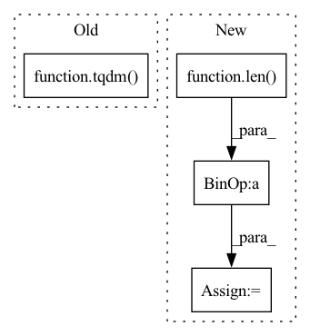

Pattern ID :41726

Before Change
def evaluate_use(self, orig_sent_li, poison_sent_li):
use = SentenceEncoder()
all_use = 0
for i in tqdm(range(len(orig_sent_li))):
orig_sent = orig_sent_li[i]
poison_sent = poison_sent_li[i]
all_use += use.get_sim(orig_sent, poison_sent)
After Change
def evaluate_use(self, orig_sent_li, poison_sent_li):
use = SentenceEncoder()
num_poison = len(poison_sent_li) / len(orig_sent_li)
orig_sent_li = orig_sent_li * int(num_poison)
all_use = 0
for i in range(len(orig_sent_li)):
orig_sent = orig_sent_li[i]
In pattern: SUPERPATTERN
Frequency: 3
Non-data size: 4
Instances
Fragment ID: 117015416
Project Name: thunlp/openbackdoor
Commit Name: 0df44c5af4b12280518b0963228cbb9bfca678d4
Time: 2022-05-26
Author: 790799494@qq.com
File Name: openbackdoor/utils/evaluator.py
M Class Name: Evaluator
N Class Name: Evaluator
M Method Name: evaluate_use(3)
N Method Name: evaluate_use(3)
M Parent Class:
N Parent Class:
M File Name: openbackdoor/utils/evaluator.py
N File Name: openbackdoor/utils/evaluator.py
M Start Line: 54
M End Line: 54
N Start Line: 57
N End Line: 60
'>
Before Change
lbp_loader = torch.utils.data.DataLoader(lbp_set, batch_size=8, shuffle=False, num_workers=int(cpu_count() / 2))
// lbp_loader = torch.utils.data.DataLoader(lbp_set, batch_size=8, shuffle=False, num_workers=0)
for feat in tqdm(lbp_loader):
if isinstance(file_feats, dict) is True:
file_feats = feat
else:
After Change
lbp_loader = BatchLBPGenerater(file_paths, batch_size, pool)
cnt = 0
wholeLen = int(len(file_paths) / batch_size)
for feat in lbp_loader:
sys.stdout.write("\r >> {}/{}".format(cnt, wholeLen))
sys.stdout.flush()
'>
Fragment ID: 117015419
Project Name: leoluopy/groupfacepytorch
Commit Name: 7ccf8cb41611070c399a5f924b13c8b935b92d89
Time: 2021-02-04
Author: lpy1990fff
File Name: cluster_ims.py
M Class Name: AnonimousClass
N Class Name: AnonimousClass
M Method Name: GetAllFilesFeat(1)
N Method Name: GetAllFilesFeat(1)
M Parent Class:
N Parent Class:
M File Name: cluster_ims.py
N File Name: cluster_ims.py
M Start Line: 44
M End Line: 53
N Start Line: 105
N End Line: 119
'>
Before Change
EPOCHES = 100
model.train()
for ep in range(EPOCHES):
train_bar = tqdm(total=math.ceil(TRAIN_SIZE / BATCH_SIZE))
optimizer.zero_grad()
total_loss = 0.
for images, labels in train_loader:
// Add channels = 1
After Change
logits, reconstruction = model(images, labels)
// Compute loss & accuracy
loss = criterion(images, labels, logits, reconstruction)
accuracy = torch.sum(
torch.argmax(logits, dim=1) == torch.argmax(labels, dim=1)).item() / len(images)
total_loss += loss
loss.backward()
optimizer.step()
print("Epoch {}, batch {}: {}, accuracy: {}".format(ep + 1,
'>
Fragment ID: 117015411
Project Name: riroaki/capsnet
Commit Name: 93663bc0187864478e3173675639202ad534b132
Time: 2020-03-08
Author: aki@akideMacBook-Pro.local
File Name: main.py
M Class Name: AnonimousClass
N Class Name: AnonimousClass
M Method Name: main(0)
N Method Name: main(0)
M Parent Class:
N Parent Class:
M File Name: main.py
N File Name: main.py
M Start Line: 42
M End Line: 72
N Start Line: 39
N End Line: 73